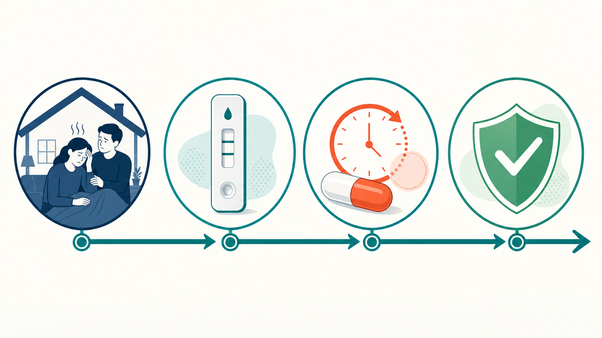

Key Takeaways
- The FDA approved Xocova (ensitrelvir) on May 29, 2026, making it the first oral antiviral approved for COVID-19 post-exposure prophylaxis in the United States.[1]
- In the SCORPIO-PEP Phase 3 trial, Xocova reduced the risk of developing symptomatic COVID-19 by 67% compared to placebo (2.9% vs. 9.0%) when started within 72 hours of household exposure.[2]
- Unlike Paxlovid (nirmatrelvir/ritonavir), Xocova does not require a ritonavir pharmacokinetic booster — a meaningful clinical distinction affecting which patients can use it based on drug interactions.[7]
- Xocova is a 5-day once-daily oral regimen (375 mg on day 1, 125 mg on days 2–5), initiated within 72 hours of exposure — well-suited to rapid evaluation through telehealth or in-person visits.[3]
- Prior COVID-19 PEP attempts — including hydroxychloroquine trials — showed no significant protection; monoclonal antibody PEP programs were constrained by variant escape, making this oral approval a genuine advance in prevention options.[9][10]
Why a PEP Option for COVID-19 Matters in 2026
COVID-19 has not disappeared. By 2026, SARS-CoV-2 circulates as an endemic respiratory pathogen, still causing serious illness in older adults, immunocompromised individuals, and people with significant comorbidities. Vaccines continue to reduce severe disease, but immunity wanes and new subvariants emerge regularly. For someone in a high-risk household who has just been exposed to an infected family member, the question is no longer just "did I get vaccinated?" — it is "is there anything I can take right now to reduce my chances of getting sick?"
Until May 2026, the honest answer to that question was: not really. Hydroxychloroquine was tested extensively as post-exposure prophylaxis and failed across multiple trials.[9] Monoclonal antibody PEP programs (including REGEN-COV) worked early in the pandemic but were largely sidelined by variant evolution and the logistical challenge of injection-only delivery.[10] That gap — between exposure and illness onset — had no reliable oral pharmaceutical intervention to fill it.
The FDA's approval of Xocova (ensitrelvir) on May 29, 2026, changes that picture. For the first time, there is an FDA-approved oral antiviral that can be initiated after a known exposure to reduce the chance of developing COVID-19 — before symptoms ever begin.[1]
What Xocova Is
Xocova (ensitrelvir) is an oral antiviral tablet developed by Shionogi & Co., Ltd. (Osaka, Japan) through joint research with Hokkaido University. It works by inhibiting the SARS-CoV-2 main protease — the enzyme the virus needs to replicate its polyprotein precursors into functional components. Without this enzyme working properly, the virus cannot assemble new copies of itself.[6]
This places ensitrelvir in the same pharmacological class as nirmatrelvir, the active component of Paxlovid. Both target the viral 3CL protease (also called Mpro). The similarities, though, largely end there. Nirmatrelvir binds covalently to Mpro. Ensitrelvir is the first noncovalent, nonpeptide Mpro inhibitor to reach clinical use — it occupies the substrate-binding pocket through a hydrogen-bonding network rather than forming a permanent chemical bond. In laboratory studies, both drugs inhibit Mpro at similar potency levels (IC50 ~0.04–0.05 µM), and ensitrelvir has demonstrated consistent activity against all five major SARS-CoV-2 variants of concern tested.[6]
The more clinically relevant distinction involves drug-drug interactions. Paxlovid requires ritonavir as a pharmacokinetic booster — ritonavir is a very strong CYP3A inhibitor that elevates nirmatrelvir blood levels, but it also interacts extensively with statins, blood thinners, immunosuppressants, and many other common medications. The resulting prescribing complexity has been a real barrier for patients who need treatment but carry a long medication list. Ensitrelvir does not require a booster. It is itself a CYP3A inhibitor with a long half-life (~48–51 hours), which creates its own set of drug interactions requiring attention — particularly with CYP3A substrates, with effects persisting 7–10 days after the last dose.[7][8] Still, the interaction profile differs meaningfully from ritonavir-based regimens, which may allow use in patients who could not safely take Paxlovid.
Dosing for the PEP indication: three 125 mg tablets on day 1 (375 mg total), then one 125 mg tablet on days 2 through 5. The full course is five days, taken once daily, with or without food. Treatment must begin within 72 hours of exposure — specifically, within 72 hours of when the infected household contact's symptoms first appeared.[3]
Shionogi received emergency regulatory approval in Japan in November 2022 for COVID-19 treatment, based on earlier trial data. Full approval in Japan followed in March 2024. In the United States, the FDA granted Fast Track designation for the PEP indication in 2025, then approved the drug on May 29, 2026 — well ahead of the PDUFA action date of June 16, 2026.[1][3]

The PEP Evidence
The FDA approval rests on SCORPIO-PEP, a global, double-blind, randomized, placebo-controlled Phase 3 trial — and the only Phase 3 study of an oral antiviral in this indication to meet its primary endpoint.[2]
The trial enrolled 2,387 participants aged 12 years and older who were living with a symptomatic COVID-19 case, tested negative for SARS-CoV-2 by local screening test, and had no symptoms at enrollment. The primary analysis population consisted of 2,041 participants who also confirmed negative by central laboratory testing at baseline. The study ran from June 2023 to September 2024. One critical contextual point: more than 99% of enrolled household contacts had antibodies to SARS-CoV-2 nucleocapsid or spike proteins, meaning nearly all participants had prior infection, vaccination, or both. This was not a naive population — it was the real-world immune picture of 2026.[2]
Participants were randomized 1:1 to receive ensitrelvir or placebo and began treatment within 72 hours of when their household index case first developed symptoms. The primary endpoint was the proportion developing symptomatic COVID-19 through Day 10.
The results were definitive. Among the 2,041 confirmed-negative participants, 2.9% of those receiving ensitrelvir developed symptomatic COVID-19 compared to 9.0% in the placebo group — a 67% relative risk reduction (risk ratio: 0.33; 95% CI: 0.22–0.49; p<0.0001).[2] Translated differently: participants receiving ensitrelvir were approximately three times less likely to develop COVID-19 than those receiving placebo.
In a pre-specified subgroup of participants with one or more risk factors for severe COVID-19, the benefit was larger still: a 76% relative risk reduction (2.4% vs. 9.9%; risk ratio: 0.24; 95% CI: 0.12–0.49).[2] The effect was consistent regardless of vaccination status or prior infection history.
Safety was favorable. Adverse event rates were nearly identical between arms: 15.1% in the ensitrelvir group versus 15.5% in the placebo group. The most common adverse events were headache, diarrhea, and cough — none at clinically meaningful rates above placebo. Notably, there were no reports of altered taste (dysgeusia) in the trial, a side effect commonly associated with Paxlovid. No treatment-related serious adverse events occurred.[2]
Evidence Comparison: PEP Options for COVID-19
| Agent | Indication / Setting | Evidence Summary | Current Status |
|---|---|---|---|
| Xocova (ensitrelvir)[2] | COVID-19 PEP — oral, once daily × 5 days, within 72 h of exposure | SCORPIO-PEP (Phase 3): 67% RRR in developing symptomatic COVID-19; 76% RRR in high-risk subgroup; p<0.0001; well tolerated, no dysgeusia | FDA approved May 29, 2026 |
| Paxlovid (nirmatrelvir/ritonavir) | COVID-19 treatment (NOT approved for PEP) | EPIC-HR trial: ~89% reduction in hospitalization/death in high-risk unvaccinated patients with mild-moderate disease; vaccinated/lower-risk effect substantially smaller in later data | FDA approved for treatment (May 2023); no PEP indication |
| REGEN-COV (casirivimab/imdevimab)[10] | COVID-19 PEP — subcutaneous injection | Reduced symptomatic COVID-19 in household contacts in 2021 trials; authorization later restricted/revoked due to variant escape | Authorization revoked; not currently available |
| Hydroxychloroquine (HCQ)[9] | COVID-19 PEP — multiple RCTs in household contacts | Meta-analysis: RR 0.91 (95% CI: 0.52–1.60); no significant reduction in COVID-19 incidence; NNT: 333 | No efficacy for COVID-19 PEP; not recommended |
Who Is This For
The approved indication is adults and adolescents (12 years and older) following contact with an individual who has COVID-19. But the more useful clinical question is: who stands to benefit most?
In practice, the patients with the greatest reason to seek PEP are those at genuine risk of severe COVID-19 if they become infected. That group in 2026 includes adults over 65, people who are immunocompromised (solid organ transplant recipients, those on chemotherapy or biologic agents, people with advanced HIV), individuals with conditions like diabetes, chronic lung disease, chronic kidney disease, or heart failure, and unvaccinated or significantly under-vaccinated people with relevant comorbidities. The SCORPIO-PEP trial showed the most substantial benefit precisely in this group — a 76% relative risk reduction versus 67% in the overall population.[2]
The timing window is strict: treatment must be started within 72 hours of when the index case's symptoms began. That clock matters clinically. A household member developing fever and cough on a Monday night means an exposed high-risk contact has until roughly Thursday morning to initiate PEP. Waiting for symptoms to develop before seeking evaluation defeats the purpose — the drug works by suppressing viral replication before the virus establishes itself enough to cause illness.
Candidates should also be screened for relevant drug interactions, given ensitrelvir's CYP3A inhibitory profile. A clinician — whether seen by telehealth or in-person — will review the patient's medication list to confirm safety before prescribing.
What This Means for Patients
The core practical question after a known household exposure is straightforward: get evaluated quickly. Two paths accomplish this, and both are clinically appropriate.
A telehealth visit allows evaluation the same day, any day of the week, without travel or waiting room time. A clinician can review symptom status of the index case, confirm the exposure timeline (essential for confirming the 72-hour window), screen current medications for CYP3A interactions, and prescribe Xocova for same-day pharmacy pickup if appropriate. For patients managing complex comorbidities who already see specialists, a virtual urgent evaluation with their own care team or a telehealth provider may be the fastest route to a decision.
An in-person urgent care visit or appointment with a primary care physician is equally valid — and may be preferred when rapid antigen testing on-site is helpful for confirming the exposure contact was truly COVID-positive, or when the patient's medication complexity warrants an in-person medication reconciliation. Some patients simply prefer the thoroughness of an in-person exam when facing a prevention decision.
Either way, several counseling points apply. The drug must be started within 72 hours of the index case's symptom onset — not 72 hours after the exposure itself, which is an important distinction. If a patient has already developed symptoms consistent with COVID-19, they may have progressed beyond the PEP window and should discuss whether Xocova for treatment (which is not currently its approved indication in the U.S.) or other management approaches are appropriate. Current evidence shows that Xocova's benefits were demonstrated in a highly immune population, so prior vaccination or infection does not exclude someone from consideration. Patients should also be counseled that CYP3A drug interactions may require temporary dose adjustments to other medications — something a prescribing clinician will address during the evaluation.
Bottom Line
The FDA approval of Xocova (ensitrelvir) fills a genuine gap in the COVID-19 prevention toolkit. For the first time, a high-risk person who has been exposed to COVID-19 in their household has an FDA-approved oral medication that can meaningfully reduce their chance of getting sick — supported by a well-designed Phase 3 trial showing a 67% reduction in risk, published in the New England Journal of Medicine.[2] The drug's once-daily dosing, clean safety profile, and absence of taste disturbance represent real-world advantages. The 72-hour window is strict, which makes timely evaluation — through telehealth or in person — the most critical step for any eligible patient after a known exposure.
References
- U.S. Food and Drug Administration. "Novel Drug Approvals for 2026 — Xocova (ensitrelvir), May 29, 2026." fda.gov/drugs/novel-drug-approvals-fda/novel-drug-approvals-2026
- Hayden FG, et al. "Ensitrelvir for Covid-19 Postexposure Prophylaxis in Household Contacts (SCORPIO-PEP)." New England Journal of Medicine. May 14, 2026. nejm.org/doi/10.1056/NEJMoa2502558
- Shionogi & Co., Ltd. "Shionogi Announces FDA Approval of XOCOVA® (ensitrelvir), the First and Only Oral Option to Help Prevent COVID-19 Following Exposure." Press release, June 1, 2026. shionogi.com/global/en/news/2026/06/20260601,2.html
- Mukae H, et al. "Efficacy and Safety of 5-Day Oral Ensitrelvir for Patients with Mild-to-Moderate COVID-19 (SCORPIO-SR)." JAMA Network Open. 2024;7(2):e2354991. jamanetwork.com/journals/jamanetworkopen/fullarticle/2814871
- Hayden FG, et al. (SCORPIO-HR: Global Phase 3 treatment trial). Open Forum Infectious Diseases. 2025. PubMed ID 39960062. pubmed.ncbi.nlm.nih.gov/39960062/
- Unoh Y, Uehara S, et al. "Molecular mechanism of ensitrelvir inhibiting SARS-CoV-2 main protease." Communications Biology. 2023;6:677. nature.com/articles/s42003-023-05071-y
- COVID-19 Drug Interactions Group, University of Liverpool. "Interactions with Ensitrelvir." 2023. covid19-druginteractions.org/site_news/43
- Kato N, et al. "Drug-drug interaction between ensitrelvir and tacrolimus in a kidney transplant recipient." Journal of Pharmaceutical Health Care and Sciences. 2025. pmc.ncbi.nlm.nih.gov/articles/PMC11756168/
- Saraswat A, et al. "The myth of hydroxychloroquine as post-exposure prophylaxis for COVID-19: a systematic review and meta-analysis." Scientific Reports. 2022. nature.com/articles/s41598-022-26053-w
- U.S. Food and Drug Administration. "FDA Authorizes REGEN-COV Monoclonal Antibody Therapy for Post-Exposure Prophylaxis (Prevention) of COVID-19." fda.gov